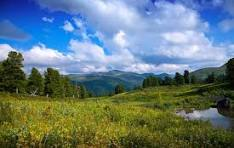

Велосипеды!
Велосипеды — это удивительные средства передвижения и средства для занятия спортом, которые покорили сердца многих людей по всему миру. Они объединяют в себе практичность, экологичность и здоровые привычки, делая их одним из самых популярных транспортных средств.
